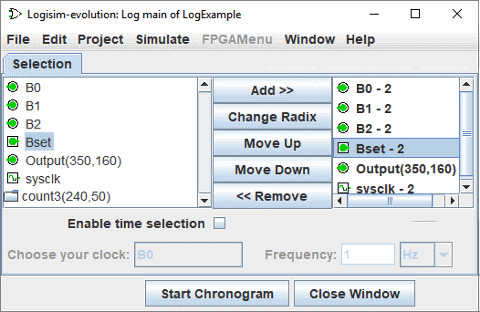

הכרטיסייה בחירה
הכרטיסייה בחירה מאפשרת לך לבחור אילו ערכים יש לכלול ביומן. החלון למטה מתאים למעגל הבא.


הכרטיסייה מחולקת לשלושה אזורים אנכיים. הראשון (השמאלי ביותר) הוא רשימה של כל הרכיבים במעגל
שניתן לרשום את ערכיו. בין הספריות המובנות, סוגי הרכיבים הבאים תומכים ברישום.
ספריית חיווט: רכיבי Pin, Probe ו-Clockעבור רכיבים שיש להם תוויות הקשורות אליהם, שמותיהם תואמים לתוויות; שמות של רכיבים אחרים ציין את סוגם ומיקומם בתוך המעגל.
ספריית I/O: רכיבי לחצנים ו-LED
ספריית זיכרון: כל הרכיבים מלבד ROM
כל תת-מעגלים יופיעו גם ברשימה; לא ניתן לבחור אותם לרישום, אבל רכיבים כשירים בתוכם הם יכולים להיות. שים לב שרכיב ה-RAM דורש ממך לבחור אילו כתובות זיכרון יש לרשום; זה מאפשר רישום רק עבור 256 הכתובות הראשונות.
האזור האנכי האחרון (הימני ביותר) מפרט את הרכיבים שנבחרו. כמו כן, זה מציין את הרדיוס (בסיס) שבו ירשמו ערכי רב-סיביות של הרכיב; לרדיוס אין השפעה משמעותית על ערכי סיביות אחת.
L'horloge sysclk doit y figurer, elle ne sera pas affichée dans le graphe.
העמודה האמצעית של הכפתורים מאפשרת מניפולציה של הפריטים בתוך הבחירה.
- הוסף>> מוסיף את הפריטים שנבחרו כעת בצד שמאל לבחירה. Il est actif seulement pour les composants éligibles.
- Change Radix מחזיר את הרדיוס עבור הרכיב הנבחר כעת בבחירה בין 2 (בינארי), 10 (עשרוני) ו-16 (הקסדצימלי).
- העבר למעלה מזיז את הרכיב שנבחר כעת בבחירה נקודה אחת קדימה.
- הזז למטה מזיז את הרכיב שנבחר כעת בבחירה למקום אחד אחורה.
- << הסר מסיר את הרכיב שנבחר כעת בבחירה.
החלק הרביעי למטה מאפשר לך להגדיר אם אתה רוצה תצוגת זמן מעל הגרף. בשביל זה זה הכרחי כדי לסמן את התיבה "הפניה לזמן" ולבחור את האות שיהווה את ההפניה. ה התדירות תגדיר את סולם הזמן המוצג. זה לא פותר את מהירות הביצוע של המעגל סימולציה. לדוגמה להלן בחרנו את האות B0 ותדר של 100 הרץ.

הבא: חלון לוח זמנים.